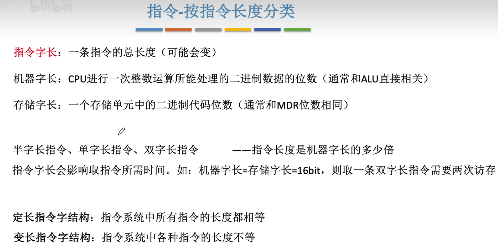

408随手一写
机器字长、指令字长、存储字长的区别与联系
区别：
- 机器字长：
- 定义：机器字长是指计算机能直接处理的二进制数据的位数，它决定了计算机的运算精度。
-
特点：通常等于CPU内部寄存器（如累加器、ALU等）的位数。例如，我们常说的64位机中的“64”即为机器字长。
-
指令字长：
- 定义：指令字长是指一个指令字中包含的二进制代码的位数。
-
特点：指令字长取决于操作码和地址码的长度。它可以等于、大于或小于机器字长。常见的指令字长有半字长(机器字长/2)、单字长(机器字长)和双字长指令(2机器字长)。(双字长指令存放在两个内存单元，取指令需访存两次)*
-
存储字长：
- 定义：存储字长是指一个存储单元存储的二进制代码的长度。具体看编址方式比如按字节编址（8位），按字编址（32位），按半字编址（16位）。
- 特点：通常与MDR（存储器数据寄存器）的位数相等。存储字长决定了存储单元能够存储的数据量。
联系：
- 三者都是计算机组成原理中的重要概念，与计算机的运算能力、指令执行效率和数据存储能力密切相关。
- 它们之间存在一定的依赖关系，例如指令字长可能会受到机器字长和存储字长的影响。
- 在现代计算机系统中，为了方便数据传输和处理，通常会将指令字长设计为存储字长的整数倍。
MDR和MAR的位数
MDR（存储器数据寄存器）的位数：
- MDR用于暂存从存储器读写的信息，其位数通常=存储字长=数据线宽度。如果数据线位数不等于存储字长，则MDR位数由数据线位数决定。这意味着MDR能够一次性地存储或传输一个或多个存储单元的全部数据。取决于数据线宽度也就是MDR位数。
- 例如，如果MDR的位数为16位，那么每个存储单元可以存放16/8bit的数据，即存储字长等于16/8bit。
MAR（存储器地址寄存器）的位数：
- MAR用于存储数据对应的地址信息，可以比作大楼的门牌号。MAR的位数决定了存储器的寻址范围。
- MAR的位数越多，能够表示的存储单元地址就越多，存储器的容量也就越大。例如，如果MAR有10位，那么理论上可以存储2^10=1024个地址信息，对应1024个存储单元。
